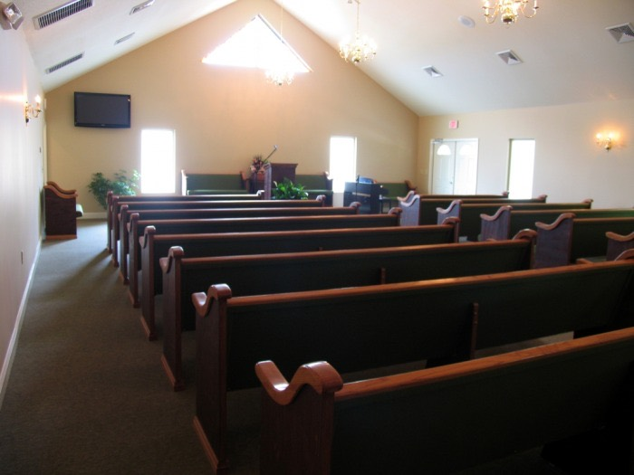
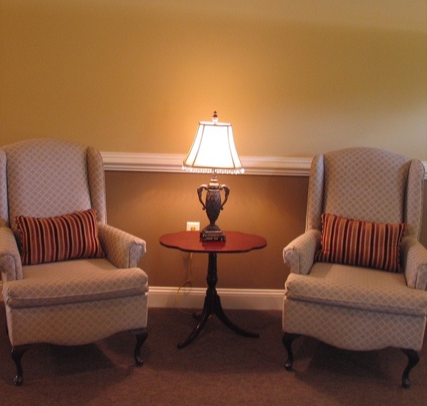

Services & planning
Funerals arefor the living.
A funeral helps meet the emotional needs of families, folding death into the circle of life and love. Our services make a very personal decision easier: an expression of your feelings, and your final tribute to the personality and taste of your loved one.

What we do for you
Our services
Funeral services
Traditional funerals with family hours, guided with sensitivity to your wishes, religious preference and financial considerations.
Chapel
A dedicated on-site chapel with seating for over 125, plus parlors and visiting areas for your guests.
Cremations
Cremation combined with the service you want: a viewing beforehand, or a memorial with or without the urn present.
Pre-need arrangements
Plan ahead, compare options and prices, and relieve your family of difficult decisions later.
Limousine & transport
Our own limousine and coach for the family and for your loved one.
Caskets, vaults & urns
A range of caskets, vaults and urns to suit your choices and your budget.
Monuments & grave markers
Help choosing a lasting memorial for the resting place.
Program design & printing
Funeral programs designed and printed for the service.
Domestic & international shipping
Transport of your loved one to a distant location for final disposition.
Multicultural options
A wide variety of options for the religious and cultural traditions of every family in our community.
Notary public
Notary service available at the funeral home.
Memorial websites & tribute videos
Online memorials and video tributes. See below.
Memories, shared
Memorial websites & tribute videos
A memorial website comes with each service. It is a beautiful three-page website, fully built in honor of your loved one, with unlimited space for photos and video clips. It is ideal for informing and sharing with friends and family members worldwide, and it is where friends can leave their condolences.
Memorial tribute videos are offered to families who choose a full-service funeral. The six to nine minute video is professionally produced from up to 40 family photographs, and can be shown during the visitation or the funeral service. Your family receives several copies on DVD as lasting keepsakes, and the video is placed on the memorial website for worldwide viewing.
Pre-need
Why prearrange your funeral?
No one should have to make these decisions for you.
When you plan ahead, you can evaluate the many options available and make an informed decision about your funeral and cemetery arrangements and the type of service you prefer. You can compare services, prices and products, and make choices that are meaningful to you and your family.
Your family will be relieved of the financial and emotional decisions often tied to end-of-life preparations, and you can live your life to the fullest, knowing you have done the right thing. Our pre-arrangement specialists will guide you through the process and answer your questions.
- Call or visit334-756-5080 · 305 W. F. Burns Drive
- Review your optionsServices, merchandise and prices from our General Price List
- Put your wishes on recordSo your family knows exactly what you wanted

Making arrangements
What to bring with you
If possible, take some time at home with your family first. These items help us honor your loved one exactly as you wish.
Obituary details
Correct spellings of family, friends and places; education, hobbies, work, military service and life achievements; addresses for donations; a favorite poem, verse or quote.
Death certificate information
Legal name, Social Security number, dates and places of birth and death, residence, marital status, spouse’s name, parents’ names (including the mother’s maiden name), occupation and education.
Military papers
The DD-214 separation papers, or at least the service number. An honorably discharged veteran is entitled to a flag, a memorial marker and military honors.
Clothing & personal touches
A suit, uniform, dress or other attire, including underwear and socks or stockings; makeup, cologne or nail polish; jewelry (tell us if you want it returned).
Photos
The best photos for the obituary, the funeral program and the memorial website, and up to 40 photos for a tribute video.
Special tributes
Mom’s quilts, hand-crafted jewelry, photos of Dad’s best catches: personal items that make the service truly theirs.
Death certificates: you will usually need one certified copy for each account, policy or property that must be settled. Ordering a few extra at the arrangement conference avoids delays later.
Call us at any hour.
We are available 24 hours a day at 305 W. F. Burns Drive, Valley, Alabama.